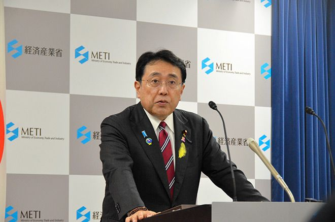

IA : Face à la domination américaine, le Japon lance la riposte souveraine avec Noetra
par O. Héniel · Publié le 16 07 2026

Ryosei Akazawa, ministre de l'Économie, du Commerce et de l'Industrie du Japon, a dévoilé la stratégie robotique du gouvernement le 30 Juin 2026. Source : Shiki Iwasawa
OpenAI, Google, Meta et Anthropic sont aujourd'hui les fournisseurs principaux de modèles de fondation d'IA. Leur point commun : ces modèles sont quasi exclusivement fournis par des acteurs américains. Que ce soit en Europe, en Afrique ou en Asie, le risque est de s'exposer au "vendor lock-in", c'est-à-dire que toute la structure d'IA d'un pays ou d'une entreprise se retrouve prisonnière d'un fournisseur unique. Cela ouvre la voie aux "backdoors" (portes dérobées) et à ce qui en découle : espionnage économique, fuite et commercialisations des données, pression juridique externe, etc. Le risque de dépendance technologique liée à l'IA est donc un enjeu majeur de la géopolitique mondiale.
Le Japon dans la course à la souveraineté en IA
Le Japon tente de répondre à ce problème en annonçant ce mois-ci la création du consortium Noetra. 44 entreprises japonaises, dont les géants Sony, SoftBank et Honda, ont décidé de mettre leur expertise en commun pour développer leur propre modèle national de fondation d'IA.
L'IA repose sur des volumes massifs de données. Or, elle est aujourd'hui introduite dans des secteurs dits sensibles (industrie, santé, défense) où les données se doivent d'être protégées. De ce fait, laisser des serveurs étrangers traiter ces données représente un risque majeur pour la sécurité nationale et le secret industriel ou médical.
Junichi Miyakawa, président et directeur général de SoftBank, déclare d'ailleurs : « Dans une société qui coexiste avec l'IA, les données détenues par les industries et les entreprises japonaises seront une source clé de compétitivité. »
Noetra se veut donc être un projet de création d'un modèle de fondation "souverain", hébergé sur une "usine à IA" physiquement située au Japon. Il ne s'agit pas juste d'une aventure commerciale ; c'est un véritable projet de "défense" économique, largement soutenu par le gouvernement japonais qui y injecte un budget de plus de 6 milliards d'euros pour sécuriser son avenir technologique face aux superpuissances en place.
Hironobu Tamba, président et directeur général de Noetra, souligne : « Pour que le Japon devienne un leader mondial de l'IA physique, il est essentiel de développer des modèles de base multimodaux qui renforceront la compétitivité industrielle du pays tout en contribuant à relever les défis sociétaux et à créer de la valeur ajoutée. »
Pour y parvenir, Noetra a mis en place une organisation de recherche et développement centrée sur des ingénieurs détachés de ses principales entreprises membres et investisseurs, de l'Institut national des sciences et technologies industrielles avancées (AIST), de Preferred Networks et d'autres organisations participantes.
Hironobu Tamba ajoute : « En collaboration avec nos partenaires, Noetra construira ces modèles de base multimodaux tout en s'efforçant de mettre en place une infrastructure d'IA fiable qui soutienne la transformation des industries et de la société japonaises. »
D’ici l’exercice fiscal 2028, Noetra prévoit de développer un modèle de fondation omnimodal capable de traiter de manière transparente le texte, les images, la vidéo et l’audio, dans le but de réaliser une IA capable de comprendre et d’exploiter des données diverses à travers différentes modalités.
Mais ce projet prend aussi une dimension culturelle. C'est en effet une manière de combattre les biais, ainsi que les valeurs éthiques, morales, sociales, linguistiques et culturelles sur lesquels les modèles occidentaux sont entraînés, et qui ne correspondent pas forcément aux autres pays, et spécifiquement ici à la culture japonaise. D'où l'importance d'un modèle de conception native pour assurer une parfaite adéquation culturelle.
Pour l’exercice fiscal 2030, Noetra entend poursuivre la réalisation d’une « IA native du monde réel », capable de comprendre des propriétés physiques (telles que la conscience spatiale) et conçue pour un déploiement dans des environnements réels.
Pour entraîner ce modèle massif, Noetra s'associe avec le géant NVIDIA pour la construction de la fondation matérielle du projet : un supercalculateur, véritable "usine à IA", qui devrait être équipé de 13 750 processeurs NVIDIA Vera et de 27 500 cartes graphiques NVIDIA Rubin. Ce supercalculateur permettra de répondre au défi de la multimodalité en fournissant la puissance nécessaire pour croiser et analyser en temps réel une multitude de données complexes. Sa construction devrait débuter en avril 2027 pour une mise en service en juin 2028.
La création de Noetra n'est donc pas seulement le lancement d'une énième startup d'IA. C'est la réponse politique et économique d'une grande nation industrielle au constat alarmant que celui qui ne possède pas son propre modèle de fondation d'IA risque d'être relégué au rang de simple "client" technologique au 21e siècle.Une leçon de souveraineté dont l'Europe, elle aussi prise en étau, ferait bien de s'inspirer.